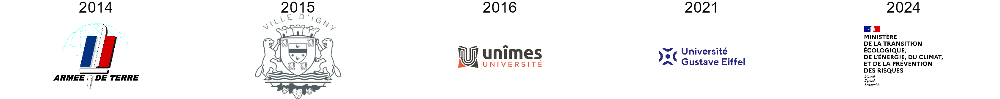

- Data-analyst / ingénieur de recherches. Psycho-sociologue,
PhD.
- Je suis expérimenté en programmation en R (+ 10 ans
d’expérience)
- Mais aussi en :
- 🕵 Conception de recherches psycho-sociologiques et
d’enquêtes
- 💻 Analyses de données programmées quantitatives et
qualitatives
- 📑 Restitutions (rapports programmés, articles,
conférences, etc.)
- Analyses de données :
- 📝 Enquêtes
- 📰 Textes
- 🗺 Cartes
- ❄ Réseaux de relations
- 💾 Bases de données
- 🔌 Capteurs, etc.
- 📞 06 33 22 31 65
- clementlvd@gmail.com
- 🎂 34 ans
- 🏡 Bièvres - 91570
- 🚗 Permis + Véhicule
- 💂 Anglais (📖, ✍️, 🗣️)
💼 Parcours professionnel

💼 Depuis Janvier 2024 : Chef de la division des
logements neufs - Ministère de la transition écologique
- ⏩ Direction de l’enquête ECLN de suivi trimestriel de la
commercialisation des logements neufs
- 🤴 Supervision de l’enquête ECLN et d’une équipe de 3 chefs de
pôles, 12 gestionnaires et 65 enquêteurs
- 📝 Réalisation des publications trimestrielles du CGDD sur la
commercialisation des logements neufs
- 🕵 Ajustements méthodologiques et réponse aux demandes en analyses
de données
- 🐙 Et autres tâches de gestion de l’équipe et de l’enquête
(animation de séminaires, conférences, veille, etc.)
- ⏩ Role de 1er méthodologiste et
lead-dev’ (création, déploiement et maintien
d’applications, principalement en R)
- 👮 Contrôles sur la base ECLN2 et mise en place de procédures pour
les équipes, réponse aux demandes, etc.
- 👷 Refonte intégrale des outils ministériels relatifs à ECLN +
amélioration des méthodes et automatisation
💼 2021 - 2023 : Chargé d’un projet de recherches
- CDD 15 mois - Univ. Gustave Eiffel (Versailles)
- ⏩ Analyses d’enquêtes, de littérature et de bases de données sur
les accidents routiers (p. ex. base d’accidents recensés par la
police)
- ⏩ Rédacteur du rapport ministériel INTEREDP, publication
scientifique et présentations en conférences internationales
💼 2016 - 2020 : Chargé d’enseignements et
doctorant contractuel - CDD 3 ans - UNÎMES
- ⏩ Enseignements de niveaux licence à Master (psycho-sociologie,
méthodes expérimentales, analyses statistiques)
- ⏩ Recherches portant sur les méthodes d’un bilan des communications
pendant les crises (p. ex. analyse de Facebook)
💼 2015 : Chargé d’études - Research
internship 8 mois - Mairie d’Igny
- ⏩ Mesure de l’influence intergénérationnelle avant & après une
intervention en milieu scolaire (enseignants → enfants →
parents)
- ⏩ Bilan des éco-gestes réalisés par un panel d’habitants et aide au
design de préventions adaptées
💼 2014 : Chargé d’études RH - CDD 4 mois -
DRH de l’Armée de Terre
- ⏩ Analyses de la base de recrutement (p. ex. qualité psychométrique
des tests, facteurs conduisant à la démission des soldats)